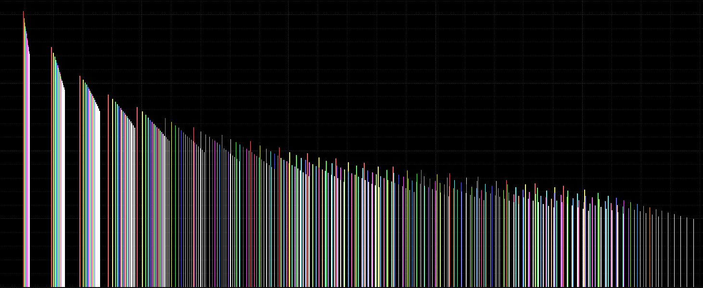

For me, and I’m sure it is for many of you as well, this evokes awe. If I
told you to start building this spacecraft today, you might think of this
as a nearly impossible task. It would require decades of study, you say!
Satellites are made by PhDs at ISRO and NASA, right?... (Click to read)
Why is there so much code in Instagram's embed link
(This article will keep updating as I uncover more)
(Click to read)
I met a 99 year old World War II veteran
Last week, I made a last minute plan to visit Normandy, knowing that it was
the 75th anniversary of D-Day. I'd wanted to visit some other place, but
the tickets got expensive, so I ditched that plan and booked tickets to
Caen, in Normandy... (Click to read)
I paid for the website, I should post something

The last time I wrote something, I said, "I need to start writing more about my discoveries as a programmer."
Heh. Been a while since I actually wrote code. It's quite fascinating to see how I started with coding,
thinking this is, this is what I'm gonna do my whole life. And now I've left that all behind, and am
completely into electronics.
That is one of the reasons I wanted to post on this site. To post interesting stuff that I learn about
electronics here, possibly for the help of others. Let's see if this turns out well. Even if it doesn't,
it's a great repository of information for myself. So here goes.
At the moment, I'm at CentraleSupelec in Paris for a summer internship. CentraleSupelec is situated about 20
km from Paris, so I try to visit the city whenever I can. And I don't think I have the literary prowess to
convey how very awesome it is to visit the city every time, but I shall try my best and augment my thoughts
with pictures.
I'll try to add as many articles on visiting Paris as I can, but I also intend to add articles on all
technical stuff I learn, because I myself learned it by reading on similar blogs. I hope I can help some
people too.
WifiToggle
It's been a while since I posted. I need to start writing more about my discoveries as a programmer.
I wrote a shell script a couple of days ago, called wifiToggle. I got irritated by the bad hostel Wi-Fi here. Somehow, Ubuntu keeps disconnecting from the hostel internet, and to connect it back, either I have to wait for a few minutes (Like I'm gonna do that when I don't have internet), or I can switch the Wi-Fi off and on.
There's too many clicks to get to the "Turn off Wi-Fi" button, and then again to turn it on. So I thought of making a keyboard shortcut. Easy enough, all I needed was a shell script, and I could link it to a custom keyboard shortcut through settings in Ubuntu.
The steps to use this script are given in the readme file in the repo. There's one interesting thing though. While assigning the path of the script in the keyboard shorcut, giving the path with ~ for home doesn't work. Rather, the full path, i.e., /home/username/... needs to be given. This is because bash recognizes ~ as $HOME, the custom keyboard shortcut maker doesn't.